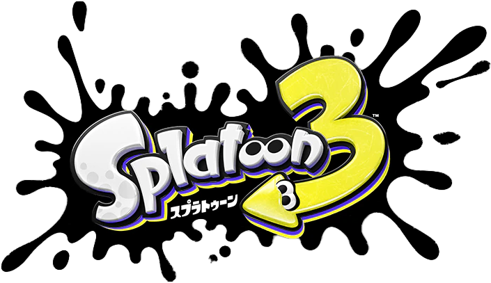
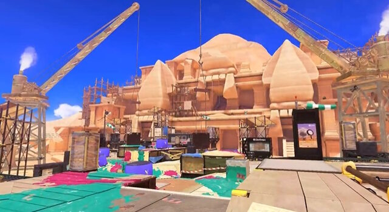

ゲーム紹介
スプラトゥーンは任天堂が開発した、アクションシューティングゲームです。 プレイヤーはインクリングと呼ばれるキャラクターを操作し、インクを使った様々な武器で 地面を塗り、塗ったインクの中を泳ぎます。そして4対4に分かれて地面を塗り合い、塗った面積を競う 「ナワバリバトル」がゲームの中心になっています。

訪問ありがとうございます。このサイトは私の好きなゲームである「スプラトゥーン」を紹介するサイトです。 スプラトゥーンの基本情報や自分の好きな武器について紹介します。ぜひ、最後に皆さんの好きな武器も教えてください。
スプラトゥーンは任天堂が開発した、アクションシューティングゲームです。 プレイヤーはインクリングと呼ばれるキャラクターを操作し、インクを使った様々な武器で 地面を塗り、塗ったインクの中を泳ぎます。そして4対4に分かれて地面を塗り合い、塗った面積を競う 「ナワバリバトル」がゲームの中心になっています。
スプラトゥーンには様々な種類の武器がありどれもユニークで、おもしろい見た目をした武器も多くあります。 その中で私の好きな武器はプライムシューターコラボ（プラコラ）です。この武器は射程が長く、ブレが少ないので使いやすくて愛用しています。

スプラトゥーンで好きなステージは「ナンプラー遺跡」です。 このステージは広くて戦いやすいので気に入っています。
あなたの好きな武器を共有しましょう！